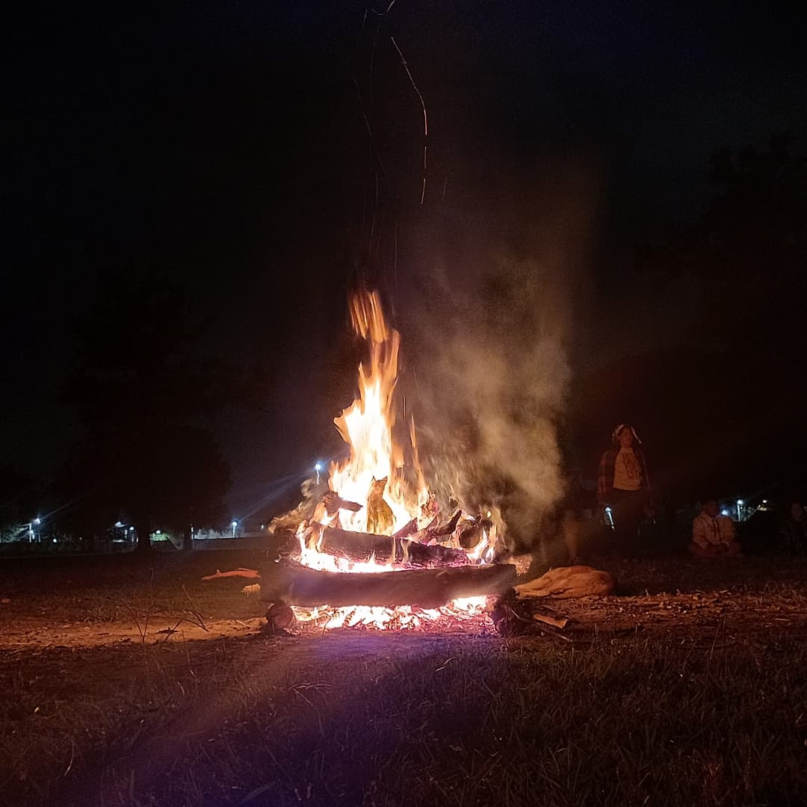
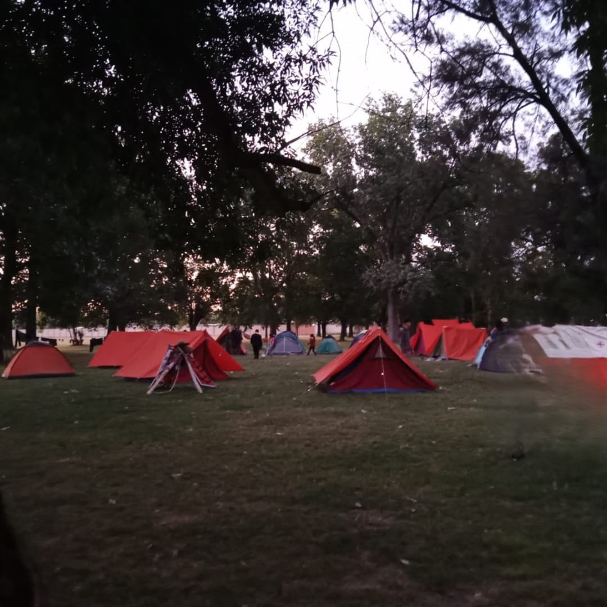

Bienvenidos al Grupo Scout 23
El Grupo Scout N°23 se encuentra en Villa Fiorito, San Luis Montfort 1637. Es una comunidad dedicada para los jóvenes, dando conocimiento y métodos scout, promoviendo valores, servicio y trabajo en equipo.

